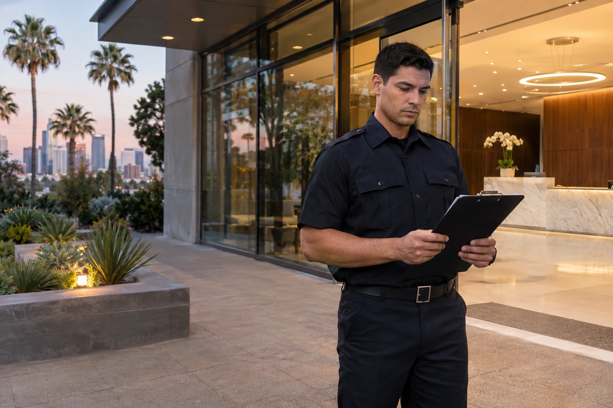

How Much Does It Cost to Hire Armed and Unarmed Security Guards in Los Angeles?

The price of security guard coverage depends on who is assigned, how many hours the site needs, what the duties involve, and the terms of the service agreement. Comparing quotes only by hourly rate can hide important differences in staffing, supervision, emergency expectations, and site responsibilities.
Understand the type of coverage first
Unarmed guards may be suitable for entry control, visible presence, routine patrols, visitor monitoring, and reporting at properties where the assignment does not call for armed coverage. Armed assignments require an assessment of risk, the applicable qualifications, and the operational needs of the client. Neither category is interchangeable with a promise that incidents will not happen.
Patrol vehicle coverage is another distinct arrangement. A site may require mobile rounds, a defined response protocol, and reporting rather than a guard stationed at one point continuously. Clarify which service is being quoted and whether its hours provide the presence your property actually needs.
Use the provider's actual prices accurately
Paradigm Security's approved advertised hourly customer rates are $30 for unarmed security, $45 for armed security, and $70 for Emergency Response Security Patrol Vehicle with Armed Guard. These are Paradigm Security's stated service rates, not Los Angeles industry averages or a guaranteed final contract total.
A quote should confirm the coverage schedule, site requirements, agreement terms, and any other contract details. The number of guards and hours changes the total substantially. For example, coverage for one evening is a different purchase than around the clock coverage for a large facility.
What to define before requesting a quote
Prepare the property address, type of site, hours and days of coverage, number of entrances or posts, and the reason protection is needed. Describe whether the work involves general presence, visitor screening, monitoring restricted areas, responding to incidents, or scheduled mobile patrols.
A security company can scope the assignment more accurately when it knows the physical layout and expectations. A warehouse with multiple loading bays is different from a retail storefront or an apartment lobby, even when the coverage hours are identical. Check credentials and contract details California regulates private patrol operators and security guards through the Bureau of Security and Investigative Services. Clients can use the state license verification tools to check the relevant business or individual status. Confirm what documentation, communication, supervision, and incident reporting the proposed provider will use.
Ask how schedule changes are handled, which duties are included, and who to contact when a site condition changes. Do not rely on a verbal promise that the provider will handle any situation without a defined scope.
Choose coverage based on the site
A useful security quote is specific enough for the property manager or owner to compare proposals meaningfully. Start with the duties and the schedule, then evaluate the appropriate guard type and resulting cost.
Paradigm Security provides armed, unarmed, and emergency patrol offerings in its service area. Request a Quote to discuss your property and obtain a proposed security service contract.